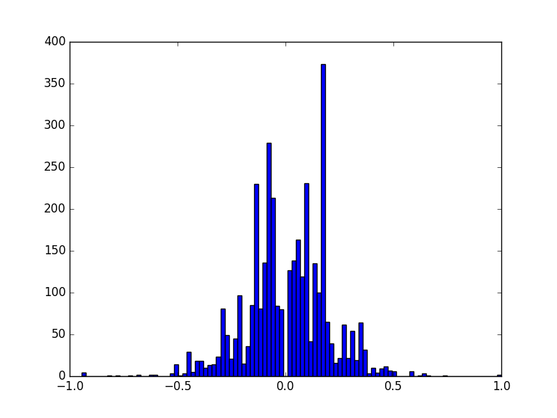
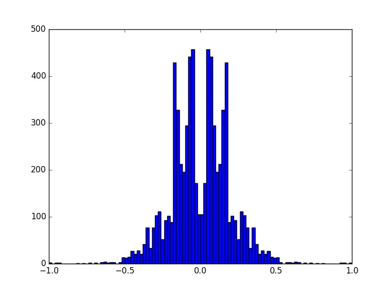

CarND Project 3: Behavioral Cloning
What
Why
How
The method is quite simple. We somehow acquire training data—perhaps by recording it ourselves—in a computerized driving simulator. The training data comprise images of the road as seen through the simulated car, along with corresponding control inputs (in this case, just the steering angle). The training data are used to train a Deep Learning neural network model so that it recognizes road/car configurations and generates the appropriate steering angle. The model is then used to generate inputs (steering angles) in real-time for the simulation, unpiloted by a human driver.
Here is an incomplete list of the tools that I used in my laboratory for this experiment.
- Keras - Deep Learning toolkit for Python
- TensorFlow - High-Performance numerical computation library for Python and backend for Keras.
- Unix command-line tools - handy for data pre-processing
- Emacs - indispensable coding and writing environment
- Org mode - indispensable writing and publishing environment for Emacs
- Lenovo IdeaPad U310 - somewhat ancient laptop
- The Mechanic's Institute Library - a calm oasis in downtown San Francisco (shown below)

Figure 1: Project Lab
While tools like Keras and TensorFlow (really, TensorFlow) are tailor-made for modern high-performance parallel numerical computation using GPUs, environments that are easily-obtained with cloud-computing environments like Amazon AWS, everything in this experiment was conducted just on this one laptop. While better hardware would be almost certainly be essential for real Deep Learning applications and autonomous vehicles, in this toy problem it wasn't really necessary.
Also, note that everything was done in this one Org-mode file. This file does not mearly document the code. This document is the code. It is an example of literate programming, and the model.py file is generated from this document.
Approach
Data
Collection and Preparation
Behavioral cloning relies on training neural networks with data exhibiting the very behavior you wish to clone. One way to achieve that for this project is to use a driving simulator provided by Udacity, which in its "training mode" can emit a stream of data samples as the user operates the car. Each sample consists of a triplet of images and a single floating point number in the interval [-1, 1], recording the view and the steering angle for the simulation and car at regular intervals. The three images are meant to be from three "cameras" mounted on the simulated car's left, center, and right, giving three different aspects of the scene and in principle providing stereoscopic depth information.
Moreover, the driving simulator also has an "autonomous mode" in which the car interacts with a network server to exchange telemetry that guides the car. The simulator sends the network service camera images and the network server is expected to reply with steering angles. So, not only is the driving simulator critical for understanding the problem and helpful for obtaining training data, it is absolutely essential for evaluating the solution.
Actually, Udacity provides not one but two simulators. The
first is the stock simulator and the second is an enhanced
simulator, whose ability to use a computer mouse as input is
very important for acquiring good training data with smoothly
varying steering angles. So, why not get both? Here, I
download and unzip the Linux versions into sub-directories
simulator-linux and simulator-beta.
wget -O simulator-linux.zip "https://d17h27t6h515a5.cloudfront.net/topher/2016/November/5831f0f7_simulator-linux/simulator-linux.zip" wget -O simulator-beta.zip "https://d17h27t6h515a5.cloudfront.net/topher/2017/January/587527cb_udacity-sdc-udacity-self-driving-car-simulator-dominique-development-linux-desktop-64-bit-5/udacity-sdc-udacity-self-driving-car-simulator-dominique-development-linux-desktop-64-bit-5.zip" unzip -d simulator-linux -u simulator-linux.zip > /dev/null 2>&1 unzip -d simulator-beta -u simulator-beta.zip > /dev/null 2>&1
While we are at it, we might as well get the network server as well, which is implemented in the drive.py Python file.
wget https://d17h27t6h515a5.cloudfront.net/topher/2017/January/586c4a66_drive/drive.py
Now, while we are encouraged to collect our own training data,
it turns out that Udacity supplies their own training data for
the first of the two tracks, which is the track on which the
solution will be validated. we might as well get that, and see
how much progress we can make just with the provided samples.
The data are in a zip file, data.zip, which we of course unzip.
we also remove the annoying __MACOSX directory.
wget -nc "https://d17h27t6h515a5.cloudfront.net/topher/2016/December/584f6edd_data/data.zip"
unzip data.zip > /dev/null 2>&1
rm -rf __MACOSX
The data—whether recorded or downloaded—are presented as CSV
"index file", driving_log.csv. Each line in this file
correlates images with the steering angle, throttle, brake, and
speed of the car. The images are related via filenames in the
first three fields, which refer to the center, left, and right
camera images stored in files in the IMG subdirectory. Let's
take a look at the beginning of that file and then determine how
many samples are proved
head data/driving_log.csv wc -l data/driving_log.csv
center,left,right,steering,throttle,brake,speed IMG/center_2016_12_01_13_30_48_287.jpg, IMG/left_2016_12_01_13_30_48_287.jpg, IMG/right_2016_12_01_13_30_48_287.jpg, 0, 0, 0, 22.14829 IMG/center_2016_12_01_13_30_48_404.jpg, IMG/left_2016_12_01_13_30_48_404.jpg, IMG/right_2016_12_01_13_30_48_404.jpg, 0, 0, 0, 21.87963 IMG/center_2016_12_01_13_31_12_937.jpg, IMG/left_2016_12_01_13_31_12_937.jpg, IMG/right_2016_12_01_13_31_12_937.jpg, 0, 0, 0, 1.453011 IMG/center_2016_12_01_13_31_13_037.jpg, IMG/left_2016_12_01_13_31_13_037.jpg, IMG/right_2016_12_01_13_31_13_037.jpg, 0, 0, 0, 1.438419 IMG/center_2016_12_01_13_31_13_177.jpg, IMG/left_2016_12_01_13_31_13_177.jpg, IMG/right_2016_12_01_13_31_13_177.jpg, 0, 0, 0, 1.418236 IMG/center_2016_12_01_13_31_13_279.jpg, IMG/left_2016_12_01_13_31_13_279.jpg, IMG/right_2016_12_01_13_31_13_279.jpg, 0, 0, 0, 1.403993 IMG/center_2016_12_01_13_31_13_381.jpg, IMG/left_2016_12_01_13_31_13_381.jpg, IMG/right_2016_12_01_13_31_13_381.jpg, 0, 0, 0, 1.389892 IMG/center_2016_12_01_13_31_13_482.jpg, IMG/left_2016_12_01_13_31_13_482.jpg, IMG/right_2016_12_01_13_31_13_482.jpg, 0, 0, 0, 1.375934 IMG/center_2016_12_01_13_31_13_584.jpg, IMG/left_2016_12_01_13_31_13_584.jpg, IMG/right_2016_12_01_13_31_13_584.jpg, 0, 0, 0, 1.362115 8037 data/driving_log.csv
we have 8037 lines, but evidently, descriptive labels are provided in the first line of this file. Let's strip that out. Also, Deep Learning lore says that it is often prudent to randomize the data when possible and always prudent to split the data into training and validation sets. Here we do all three in just a few lines of shell code, taking 1000 samples (about 12%) as validation data.
cat data/driving_log.csv | tail -n+2 | shuf > data/driving_log_all.csv cat data/driving_log_all.csv | head -n1000 > data/driving_log_validation.csv cat data/driving_log_all.csv | tail -n+1001 > data/driving_log_train.csv
As a sanity check, we report the number of total samples,
training samples, and validation samples. Even if the provided
Udacity data are insufficient ultimately for delivering a
solution, they are valuable for establishing a baseline for
developing that solution. A project like this has many free
parameters and the combinatorial explosion among them can
quickly overwhelm the researcher, and so eliminating some of
those free parameters by avoiding recording one's own data—if
only in the interim—is a real boon. we do not use the
driving_log_all.csv file after this point; it served as a
handy placeholder of the original data, shuffled and with the
header removed. However, the driving_log_train.csv and
driving_log_validation.csv files play a central role as we
iteratively develop and refine the model.
wc -l data/driving_log_all.csv wc -l data/driving_log_train.csv wc -l data/driving_log_validation.csv
8036 data/driving_log_all.csv 7036 data/driving_log_train.csv 1000 data/driving_log_validation.csv
Before leaving the land of shell commands for the land of Python scripts and neural nets, we create one other useful data file. Paul Heraty argues that it can be useful in the early stages of developing a solution to "overtrain" it on a small sample comprising disparate canonical examples. As we shall see, we can confirm that this was extremely good advice.
One of the chief difficulties we encountered as a newcomer to Deep Learning and its community of tools was simply "getting it to work in the first place," independent of whether the model actually was very good. One of the chief strategies for overcoming this difficulty we found is to "try to get a pulse:" develop the basic machinery of the model and solution first, with little or no regard for its fidelity. Working through the inevitable blizzard of error messages one first encounters is no small task. Once it is cleared and the practitioner has confidence his tools are working well, then it becomes possible to rapidly iterate and converge to a good solution.
Creating an "overtraining sample" is good because overtraining is a vivid expectation that can quickly be realized (especially with only 3 samples), and if overtraining does not occur you know you have deeper problems.
With a little magic from Bash, Awk, etc., we can select three disparate samples, with neutral steering, extreme left steering, and extreme right steering.
cat <(cat data/driving_log_all.csv | sort -k4 -n -t, | head -n1) <(cat data/driving_log_all.csv | sort -k4 -nr -t, | head -n1) <(cat data/driving_log_all.csv | awk -F, -vOFS=, '{print $1, $2, $3, sqrt($4*$4), $5, $6, $7}' | sort -k4 -n -t, | head -n1) > data/driving_log_overtrain.csv
cat data/driving_log_overtrain.csv
IMG/center_2016_12_01_13_39_28_024.jpg, IMG/left_2016_12_01_13_39_28_024.jpg, IMG/right_2016_12_01_13_39_28_024.jpg, -0.9426954, 0, 0, 28.11522 IMG/center_2016_12_01_13_38_46_752.jpg, IMG/left_2016_12_01_13_38_46_752.jpg, IMG/right_2016_12_01_13_38_46_752.jpg, 1, 0, 0, 13.2427 IMG/center_2016_12_01_13_30_48_287.jpg, IMG/left_2016_12_01_13_30_48_287.jpg, IMG/right_2016_12_01_13_30_48_287.jpg,0, 0, 0, 22.14829
we will be able to see exactly what the images for these samples once we set up a suitable Python environment, which we do in the next section.
Setup
Udacity helpfully provides a CarND Starter Kit, which involves acquiring the contents of a particular GitHub repository. The consequence of this is a Conda environment for Python, whose definition we extracted into the environment.yml file. That way, if the environment does not already exist it can be created with this command.
conda env create --file environment.yml --name CarND-Behavioral-Cloning
Having set up the Conda environment, and activated it, now we can finally load the Python modules that we will need in later sections.
from PIL import Image from itertools import groupby, islice, zip_longest, cycle, filterfalse from keras.layers import Conv2D, Flatten, MaxPooling2D, Dense, Dropout, Lambda, AveragePooling2D from keras.layers.convolutional import Cropping2D, Convolution2D from keras.models import Sequential, model_from_json from keras.utils.visualize_util import plot from scipy.stats import kurtosis, skew, describe import matplotlib.pyplot as plt import numpy as np import random
Utilities
Another piece of advice impressed upon students in the class, to
the point of it practically being a requirement, was to learn to
use Python generators and the fit_generator function in our
Deep Learning toolkit, Keras. Generators allow for a form of
lazy loading, which can be useful in Machine Learning settings
where large data sets that do not fit into main memory are the
norm. Keras makes use of that with fit_generator, which
expects input presented as generators that infinitely recycle
over the underlying data.
I took that advice to heart and spent considerable time—perhaps more than was necessary—learning about generators and generator expressions. It did pay off somewhat in that I developed a tiny library of reusable, composeable generator expressions, which are presented here.
Before doing that, though, first a detour and a bit of advice.
Anyone who is working with Python generators is urged to become
acquainted with itertools, a standard Python library of
reusable, composeable generators. For me the cycle generator
was a key find. As mentioned above, fit_generator needs
infinitely-recycling generators, which is exactly what
itertools.cycle provides. One wrinkle is that cycle
accomplishes this with an internal data cache, so if your data
do not fit in memory you may have to seek an alternative.
However, if your data do fit in memory this confers a very
nice property, for free: after cycling through the data the
first time all subsequent retrievals are from memory, so that
performance improves dramatically after the first cycle.
This turns out to be very beneficial and entirely appropriate for our problem. Suppose we use the Udacity data. In that case, we have 8136 images (training + validation) provided we use one camera only (such as the center camera). As we shall see below, each image is a 320x160 pixel array of RGB values, for a total of 150k per image. That means approximately 1 GB of RAM is required to store the Udacity data. My 4 year-old laptop has 4 times that. Now, this rosy picture might quickly dissolve if we use much more data, such as by using the other camera angles and/or acquiring more training data. Then again, it may not. With virtual memory, excess pages should be swapped out to disk. That's not ideal, but to first order it's not obvious that it's functionally much different from or much worse than recycling the data by repeatedly loading the raw image files. In fact, it may be better, since at least we only perform the actual translation from PNG format to NumPy data arrays once for each image.
If we are really concerned about memory usage we might consider
reducing the input image size, such as with OpenCV's
cv2.resize command, and we might consider cropping the image.
But, I think we should think carefully about this. These
operations may have an effect on the performance of the model,
and so manipulating the images in this way is not something we
should take lightly. Nevertheless, it can be beneficial as we
shall see shortly. However, if we do decide to crop and
resize, there is a technical trade-off to be made. Either we
can crop and resize as a pre-processing step, or we can do it
directly within the model, and there are advantages and
disadvantages to each. If we crop and resize as a
pre-processing step, it has direct impact on the aforementioned
memory considerations. But, we must take care to perform exactly the same crop and resize operations in the network service! Since cropping and resizing essentially introduce new
hyper-parameters, those parameters somehow must be communicated
to drive.py. If we crop and resize directly within the model,
it has no beneficial impact on the aforementioned memory
considerations. But, we get those operations and their internal hyper-parameters for free within the network service! I found
the latter advantage to be much greater and so the trade-off I
selected was to crop and resize within the model.
In any case, my experiments showed that for the Udacity data at
least, loading the data into an in-memory cache via
itertools.cycle (or, more precisely, my variation of it) and
then infinitely recycling over them proved to be a very good
solution.
However, there is one problem with itertools.cycle by itself,
and that is that again, according to Deep Learning lore, it is
prudent to randomize the data on every epoch. To do that, we
need to rewrite itertools.cycle so that it shuffles the data
upon every recycle. That is easily done, as shown below. Note
that the elements of the iterable are essentially returned in
batches, and that the first batch is not shuffled. If you want
only to return random elements then you must know batch size,
which will be the number of elements in the underlying finite
iterable, and you must discard the first batch. The
itertools.islice function can be helpful here. In our case it
is not a problem since all of the data were already shuffled
once using Unix command-line utilities above.
def rcycle(iterable): saved = [] for element in iterable: yield element saved.append(element) while saved: random.shuffle(saved) for element in saved: yield element
The remaining utility functions that I wrote are quite straightforward and for brevity are written as "one-liners."
- feed
- generator that feeds lines from the file named by 'filename'
- split
- generator that splits lines into tuples based on a delimiter
- select
- generator that selects out elements from tuples
- load
- non-generator that reads an image file into a NumPy array
- fetch
- generator that loads index file entries into samples
- group
- generator that groups input elements into lists
- transpose
- generator that takes a generator of lists into a list of generators
- batch
- generator that takes a list of generators into a list of NumPy array "batches"
feed = lambda filename: (l for l in open(filename)) split = lambda lines, delimiter=",": (line.split(delimiter) for line in lines) select = lambda fields, indices: ([r[i] for i in indices] for r in fields) load = lambda f: np.asarray(Image.open(f)) fetch = lambda records, base: ([load(base+f.strip()) for f in record[:1]]+[float(v) for v in record[1:]] for record in records) group = lambda items, n, fillvalue=None: zip_longest(*([iter(items)]*n), fillvalue=fillvalue) transpose = lambda tuples: (list(map(list, zip(*g))) for g in tuples) batch = lambda groups, indices=[0, 1]: ([np.asarray(t[i]) for i in indices] for t in groups)
Exploratory Analysis
X = [x for x in fetch(select(split(feed("data/driving_log_overtrain.csv")), [0,3]), "data/")] f = plt.figure() plt.imshow(X[0][0]) f.suptitle("Angle: " + str(X[0][1])) s = plt.savefig("road1.png", format="png", bbox_inches='tight') f = plt.figure() plt.imshow(X[1][0]) f.suptitle("Angle: " + str(X[1][1])) s = plt.savefig("road2.png", format="png", bbox_inches='tight') f = plt.figure() plt.imshow(X[2][0]) f.suptitle("Angle: " + str(X[2][1])) s = plt.savefig("road3.png", format="png", bbox_inches='tight')

Figure 2: Large Negative Steering Angle

Figure 3: Large Positive Steering Angle

Figure 4: Neutral Steering Angle
f = plt.figure() plt.imshow(X[0][80:140]) # Crop top and bottom s = plt.savefig("road4.png", format="png", bbox_inches='tight')

Figure 5: Heavily-Cropped Image
Get the target labels—the steering angles—for all of the
data, from data/driving_log_all.csv, plot a histogram, and
generate basic descriptive statistics.
f = plt.figure() y1 = np.array([float(s[0]) for s in select(split(feed("data/driving_log_all.csv")),[3])]) h = plt.hist(y1,bins=100) s = plt.savefig("hist1.png", format='png', bbox_inches='tight') describe(y1)
DescribeResult(nobs=8036, minmax=(-0.94269539999999996, 1.0), mean=0.0040696440648332506, variance=0.016599764281272529, skewness=-0.1302892457752191, kurtosis=6.311554102057668)

Figure 6: All Samples - No Reflection
The data have non-zero mean and skewness. perhaps arising from a bias toward left-hand turns when driving on a closed track.
- mean=0.0040696440648332515
- skewness=-0.13028924577521922
The data are dominated by small steering angles because the car spends most of its time on the track in straightaways. The asymmetry in the data is more apparent if I mask out small angles and repeat the analysis. Steering angles occupy the interval [-1, 1], but the "straight" samples appear to be within the neighborhood [-0.01, 0.01].
I might consider masking out small angled samples from the actual training data as well, a subject we shall return to in a later section.
f = plt.figure() p = lambda x: abs(x)<0.01 y2 = np.array([s for s in filterfalse(p,y1)]) h = plt.hist(y2,bins=100) s = plt.savefig("hist2.png", format='png', bbox_inches='tight') describe(y2)
DescribeResult(nobs=3584, minmax=(-0.94269539999999996, 1.0), mean=0.0091718659514508933, variance=0.037178302717086116, skewness=-0.16657825969015194, kurtosis=1.1768785967587378)

Figure 7: abs(angle)>0.01 - No Reflection
A simple trick that I can play to remove this asymmetry—if I wish—is to join the data with its reflection, effectively doubling our sample size in the process. For illustration purposes only, I shall again mask out small angle samples.
f = plt.figure() y3 = np.append(y2, -y2) h = plt.hist(y3,bins=100) s = plt.savefig("hist3.png", format='png', bbox_inches='tight') describe(y3)
DescribeResult(nobs=7168, minmax=(-1.0, 1.0), mean=0.0, variance=0.03725725015081123, skewness=0.0, kurtosis=1.1400026599654964)

Figure 8: abs(angle)>0.01 - Full Reflection
In one of the least-surprising outcomes of the year, after performing the reflection and joining operations, the data now are symmetrical.
- mean=0.0
- skewness=0.0
Of course, in this analysis I have only reflected the target labels. If I apply this strategy to the training data, naturally I need to reflect along their horizontal axes the corresponding input images as well.
Implementation
Model
- Crop
- crop to region (non-trainable)
- Resize
- reduce scale (non-trainable)
- Normalize
- scale values to [-1, 1] (non-trainable)
- Convolution
- learn spatial features and compress
- MaxPool
- reduce model size
- Dropout
- add regularization (non-trainable)
- Flatten
- stage to fully-connected layers (non-trainable)
- FC
- fully-connected layers
- Readout
- single node steering angle (non-trainable)
Return a Keras neural network model.
def CarND(input_shape, crop_shape): model = Sequential() # Crop # model.add(Cropping2D(((80,20),(1,1)), input_shape=input_shape, name="Crop")) model.add(Cropping2D(crop_shape, input_shape=input_shape, name="Crop")) # Resize model.add(AveragePooling2D(pool_size=(1,4), name="Resize", trainable=False)) # Normalize input. model.add(Lambda(lambda x: x/127.5 - 1., name="Normalize")) # Reduce dimensions through trainable convolution, activation, and # pooling layers. model.add(Convolution2D(24, 3, 3, subsample=(2,2), name="Convolution2D1", activation="relu")) model.add(MaxPooling2D(name="MaxPool1")) model.add(Convolution2D(36, 3, 3, subsample=(1,1), name="Convolution2D2", activation="relu")) model.add(MaxPooling2D(name="MaxPool2")) model.add(Convolution2D(48, 3, 3, subsample=(1,1), name="Convolution2D3", activation="relu")) model.add(MaxPooling2D(name="MaxPool3")) # Dropout for regularization model.add(Dropout(0.1, name="Dropout")) # Flatten input in a non-trainable layer before feeding into # fully-connected layers. model.add(Flatten(name="Flatten")) # Model steering through trainable layers comprising dense units # as ell as dropout units for regularization. model.add(Dense(100, activation="relu", name="FC2")) model.add(Dense(50, activation="relu", name="FC3")) model.add(Dense(10, activation="relu", name="FC4")) # Generate output (steering angles) with a single non-trainable # node. model.add(Dense(1, name="Readout", trainable=False)) return model
CarND([160, 320, 3], ((80,20),(1,1))).summary()
plot(CarND([160, 320, 3], ((80,20),(1,1))), to_file="model.png", show_shapes=True)

Figure 9: CarND Neural-Net Architecture
Training
Data Pipeline
Create a data-processing pipeline. The 'trainingfile' parameter is the name of a CSV index file specifying samples, with fields for image filenames and for steering angles. The 'basepath' parameter is the directory path for the image filenames. The pipeline itself is a generator (which is an iterable), where each item from the generator is a batch of samples (X,y). X and y are each NumPy arrays, with X as a batch of images and y as a batch of outputs. Finally, augmentation may be performed if a training pipeline is desired, determined by the 'training' parameter. Training pipelines have their images randomly flipped along the horizontal axis, and are randomly shifted along their horizontal axis.
def pipeline(theta, training=False): samples = select(rcycle(fetch(select(split(feed(theta.trainingfile)), [0,3]), theta.base_path)), [0,1]) if training: if theta.flip: samples = (rflip(x) for x in samples) if theta.shift: samples = (rflip(x) for x in samples) groups = group(samples, theta.batch_size) batches = batch(transpose(groups)) return batches
Training
class HyperParameters: def __init__(self): return theta = HyperParameters() theta.input_shape = [160, 320, 3] theta.crop_shape = ((80,20),(1,1)) theta.samples_per_epoch = 30 theta.valid_samples_per_epoch = 30 theta.epochs = 3 theta.batch_size = 10 theta.trainingfile = "data/driving_log_overtrain.csv" theta.validationfile = "data/driving_log_overtrain.csv" theta.base_path = "data/" theta.flip = False theta.shift = False model = CarND(theta.input_shape, theta.crop_shape) model.compile(loss="mse", optimizer="adam") traingen = pipeline(theta, training=True) validgen = pipeline(theta) print("") history = model.fit_generator( traingen, theta.samples_per_epoch, theta.epochs, validation_data=validgen, verbose=2, nb_val_samples=theta.valid_samples_per_epoch)
theta = HyperParameters() theta.input_shape = [160, 320, 3] theta.crop_shape = ((80,20),(1,1)) theta.trainingfile = "data/driving_log_train.csv" theta.validationfile = "data/driving_log_validation.csv" theta.base_path = "data/" theta.samples_per_epoch = 7000 theta.valid_samples_per_epoch = 1037 theta.epochs = 3 theta.batch_size = 100 theta.flip = False theta.shift = False model = CarND(theta.input_shape, theta.crop_shape) model.compile(loss="mse", optimizer="adam") traingen = pipeline(theta, training=True) validgen = pipeline(theta) print("") history = model.fit_generator( traingen, theta.samples_per_epoch, theta.epochs, validation_data=validgen, verbose=2, nb_val_samples=theta.valid_samples_per_epoch) model.save_weights("model.h5") with open("model.json", "w") as f: f.write(model.to_json())